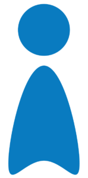

Modeling & SQL
Relational database design in PostgreSQL for three systems (Los Skeepers, FleetControl, SecureGate) and graph databases with Neo4J at university.
Desarrollador
Full Stack Junior.
Construyo aplicaciones web para clientes reales: interfaces con React, backend con Node.js y datos con PostgreSQL.
Three projects sold and in use. Each one explains how it is built: data, analysis, access, hosting and libraries.
See all projectsReal evidence from a system in production: the Los Skeepers admin panel, which I designed and built end to end.
Relational database design in PostgreSQL for three systems (Los Skeepers, FleetControl, SecureGate) and graph databases with Neo4J at university.
Anonymous event tracking (visits, clicks, time per section) and an automatic daily job that summarizes raw data and purges old detail — a small ETL pipeline.
Active visitors and visits per day, week and month, conversion funnels, most-clicked elements, device and browser breakdown, and location grouping by country, region and city.
Excel exports generated from the database so the client can analyze and share the data without technical knowledge.
Anonymous IDs, IP never stored, approximate location only. Certified in Ethics in Research with Human Subjects (UVG).
Experience explaining to non-technical people (clients, children and parents at the museum) and agile work with Jira.
Each technology is backed by real projects. Pick one to see the evidence.
Cómo trabajo con Codex y Claude ↗Uso Codex y Claude como apoyo para desarrollar lógica de programación y reviso detalladamente lo que generan.
Trabajo sobre el problema y la lógica que necesita la solución.
Me apoyo en Codex y Claude durante el desarrollo.
Reviso lo generado y compruebo que responda a la lógica del proyecto.
Una selección de mi formación en UVG. Elige un curso para ver su relación con mi trabajo.
Bases de Datos 1 · Sistemas y Tecnologías Web · Algoritmos y Estructuras de Datos · Ingeniería de Software · Programación Orientada a Objetos · Interacción Humano-Computadora.

I am a Computer Science Engineering student at Universidad del Valle de Guatemala, currently in my third year. I specialize in creating clean, scalable and visually appealing solutions.
My focus is Full Stack development: from modern interfaces to robust backend systems, relational and graph databases, Docker containers and microcontroller programming.
I am deeply interested in cybersecurity, artificial intelligence and systems architecture. I work in a structured way using sprints and Jira management, prioritizing clean and maintainable code.
Una web puede ser una herramienta, un sistema o un lugar para explorar. Estas pequeñas demos funcionan aquí mismo. Toca, cambia y prueba.

One page, ready to print or attach to an application. Typeset in LaTeX.
Available for freelance projects, academic collaborations or professional internships. Write to me.